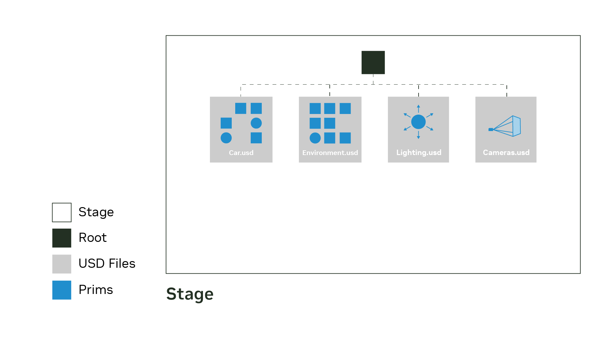
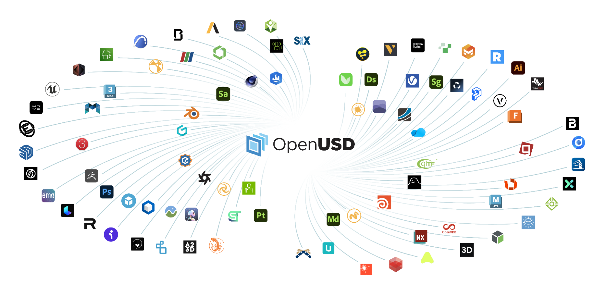

Universal Scene Description — the scene description and composition system at the core of modern Omniverse workflows. Not just a 3D file format, but a layered data model for building, composing, querying, and exchanging complex scenes across tools while preserving hierarchy, metadata, overrides, and non-destructive collaboration.
The key concept is the stage: the composed scenegraph you work with at runtime. A stage may be assembled from many layers and files, but applications traverse it as one coherent hierarchy of prims and properties.
from pxr import Usd, UsdGeom
stage = Usd.Stage.CreateNew("assets/first_stage.usda")
UsdGeom.Cube.Define(stage, "/cube")
stage.Save()
stage = Usd.Stage.Open("assets/first_stage.usda")
for prim in stage.Traverse():
print(prim)
That distinction matters because most real USD workflows are about composition, not isolated files. A stage assembles many contributing layers at runtime — each layer adds opinions that resolve to a final composed result.
A stage is the composed runtime view built from one or more contributing layers. You open, traverse, and query a stage — you do not directly manipulate layers at runtime.
stage = Usd.Stage.Open("scene.usda")
for prim in stage.Traverse():
print(prim.GetPath(), prim.GetTypeName())
Key stage operations: CreateNew, Open, Traverse, GetPrimAtPath, GetDefaultPrim, Save.
Prims are the fundamental building blocks of a USD scene. Every node in the scenegraph is a prim.
cube = UsdGeom.Cube.Define(stage, "/World/Geometry/cube") xform = UsdGeom.Xform.Define(stage, "/World") scope = UsdGeom.Scope.Define(stage, "/World/Geometry")
Schemas are standard contracts that define what a prim is or what APIs apply to it. They provide:
| Schema family | Purpose |
|---|---|
UsdGeom | Geometry types: Mesh, Cube, Sphere, Camera, Xform |
UsdShade | Materials, shaders, and surface binding |
UsdLux | Lighting: DistantLight, SphereLight, RectLight |
UsdPhysics | Rigid bodies, joints, collision shapes |
| Custom | User-defined metadata attributes |

| Extension | Use |
|---|---|
.usd | General container, ASCII or binary |
.usda | Human-readable text format |
.usdc | Compact binary crate format (fast I/O) |
.usdz | Packaged distribution archive (self-contained) |
OpenUSD is designed around layered opinions. The composition arc is the mechanism by which multiple layers, references, and inheritance contribute to the final composed stage:
def defines a prim in a layerover overrides existing authored data (non-destructive)class provides reusable inherited defaultsThat lets multiple teams contribute to one asset or environment without destructive merges. The final value for a property comes from value resolution, which evaluates all applicable layers in priority order (LIVRPS: Local, Inherits, VariantSets, References, Payloads, Specializes).
The practical advantage of OpenUSD is ecosystem reach: it acts as shared 3D infrastructure across DCC tools, CAD/BIM pipelines, renderers, and simulation platforms.
When many tools can exchange structured scene data instead of flattened exports, collaboration gets cheaper and less lossy. Key integrations:
